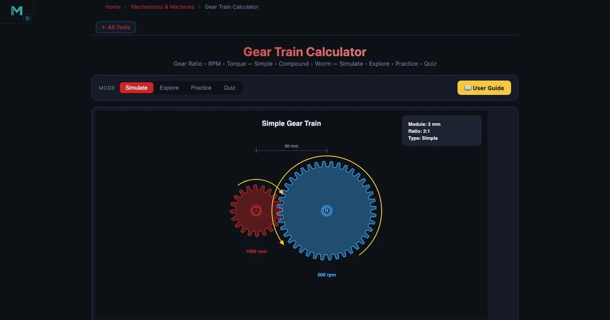
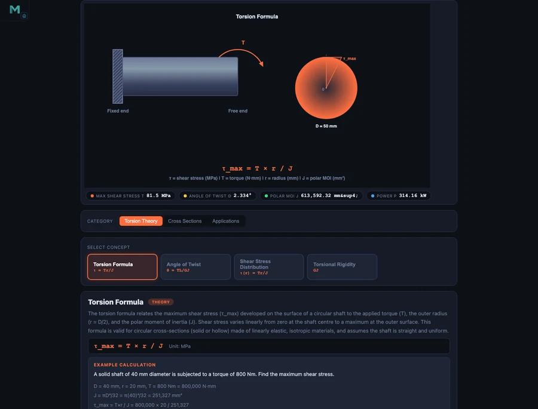

Learn Machine Design With Simulators — Free Student Guide

- Interactive machine design simulators let you change inputs (tooth count, shaft diameter, belt type, bolt preload) and instantly see the resulting speed, stress, and force — turning textbook formulas into physical intuition.
- Five core tools cover the curriculum: gear trains (GR = N_driven / N_driver), shaft torsion (T/J = τ/r = Gθ/L), cam-follower motion profiles, belt drives (T1/T2 = e^(μθ)), and bolted joints (C = kb / (kb + km)).
- Because shaft shear stress scales as 1/D³, a small diameter change produces a large stress drop — exactly the kind of design trade-off the simulators make visible in seconds rather than a full homework session.
Machine design is where engineering equations meet steel. Every shaft that carries torque, every gear that transfers speed, every bolt that holds a casing together — these components are designed using the same fundamental formulas that fill machine design textbooks. The challenge for students is that a formula on a page tells you very little about how a design decision ripples through a system. Change the shaft diameter by 10 mm: how much does the shear stress change? Swap a flat belt for a V-belt: how does the transmitted power change?
Free interactive simulators answer those questions instantly and visually. This guide walks through five NHIT VisualLab tools that together cover the core machine design curriculum — gear trains, shaft torsion, cam-follower mechanisms, belt drives, and bolted joints. Each section presents the key equations, a worked numerical example, and a suggested way to use the simulator for deeper understanding.
Machine Design — The Bridge Between Theory and the Workshop Floor
Machine design sits at the intersection of strength of materials, kinematics, and manufacturing. A gear train must deliver the right speed ratio without the teeth failing in bending or contact stress. A shaft must carry torque without twisting too far or yielding in shear. A bolted joint must maintain clamping force under fluctuating loads without the bolt fatiguing. Each of these design decisions involves a specific analytical model — and each model has parameters that interact in ways that are hard to visualise from an equation alone.
The simulators linked throughout this guide are built on exactly these analytical models. They use the same formulas — no approximations, no shortcuts — but present the results graphically and update them in real time as you change inputs. That immediate feedback is what turns a formula into physical intuition. A student who has watched shear stress climb as shaft diameter decreases, then watched it drop as they switch to a hollow section, understands the torsion formula at a level that no amount of homework problems can replicate on its own.
Before diving into specific tools, it is worth noting that machine design problems are rarely isolated. Gear trains connect to shaft design. Shaft design connects to bearing selection. Bearings connect to housing stiffness. Understanding the relationships between components — rather than memorising formulas for each in isolation — is the actual skill machine design courses are trying to develop. Use the simulators to explore those connections.
Tool 1: Gear Trains Simulator — Ratios, Speed, and Torque in One View
The gear ratio is the most fundamental relationship in power transmission. For a simple gear pair, the ratio is the number of teeth on the driven gear divided by the number of teeth on the driver:
\[GR = \frac{N_B}{N_A}\]
A driver gear with 20 teeth (N_A = 20) meshing with a driven gear of 60 teeth (N_B = 60) gives GR = 3:1. Input speed of 1800 RPM produces an output speed of 600 RPM. Output torque is three times input torque — because power is conserved (ignoring friction).
\[\omega_{out} = \frac{\omega_{in}}{GR} \qquad T_{out} = T_{in} \times GR\]
Gear geometry goes deeper. The module m = d/N defines metric tooth size, where d is pitch circle diameter and N is tooth count. Circular pitch p = πm gives the arc length per tooth along the pitch circle. Two meshing gears must have the same module for correct engagement. In the simulator, you can see the pitch circles drawn to scale and verify that a module-2 driver (d_A = 40 mm) meshes correctly with a module-2 driven gear (d_B = 120 mm).
Compound gear trains multiply gear ratios. With NA = 12, NB = 48 (first stage, GR₁ = 4), NC = 10, ND = 40 (second stage, GR₂ = 4), the total ratio is:
\[GR_{total} = GR_1 \times GR_2 = 4 \times 4 = 16\]
An input of 720 RPM becomes an output of 45 RPM. The simulator displays each stage's ratio and the cumulative total, making compound train analysis straightforward even for students seeing it for the first time.
Two special configurations are also covered. A planetary (epicyclic) gear train with a fixed ring gear gives GR = 1 + N_ring / N_sun — enormously high ratios in a compact package, used in automatic transmissions and electric motor drives. A worm gear with a single-start worm and 40-tooth wheel gives GR = 40:1 and is self-locking, meaning the wheel cannot back-drive the worm. The simulator lets you toggle between simple, compound, planetary, and worm configurations and immediately see the geometric and numerical consequences.
Tool 2: Shaft Torsion — Designing for Twist and Shear
Every rotating machine has shafts, and every shaft under torque develops shear stress and angular deformation. The governing torsion formula links torque T, polar second moment of area J, shear stress τ, radial distance r, shear modulus G, angle of twist θ, and shaft length L:
\[\frac{T}{J} = \frac{\tau}{r} = \frac{G\theta}{L}\]
For a solid circular shaft, J = πD⁴/32. For a hollow shaft with outer diameter D and inner diameter d:
\[J = \frac{\pi(D^4 - d^4)}{32}\]
Consider a drive shaft: D = 50 mm solid steel, torque T = 2000 Nm. The polar moment is J = π(0.05)⁴/32 = 6.136 × 10⁻⁷ m⁴. Maximum shear stress at the outer surface:
\[\tau_{max} = \frac{T \cdot r}{J} = \frac{2000 \times 0.025}{6.136 \times 10^{-7}} = 81.49 \text{ MPa}\]
Angle of twist over L = 1 m with G = 80 GPa (steel):
\[\theta = \frac{TL}{GJ} = \frac{2000 \times 1}{80 \times 10^9 \times 6.136 \times 10^{-7}} = 0.04074 \text{ rad} = 2.334°\]
Power transmitted at 1500 RPM: P = 2πNT/60 = 2π × 25 × 2000 = 314.16 kW.
Now switch to a hollow shaft: OD = 80 mm, ID = 50 mm, same torque T = 1500 Nm. The hollow section's larger outer radius and higher J concentrate less shear at the surface — τ_max = 17.60 MPa, far below the solid 50 mm shaft value. The hollow shaft uses less material and produces less shear stress simultaneously. The Shaft Torsion Formula — Shear Stress Guide covers these calculations in full detail.

In the simulator, drag the diameter slider from 50 mm upward and watch τ_max fall steeply — shear stress scales as 1/D³, so doubling the diameter reduces stress by a factor of eight. Toggle between solid and hollow to compare J values and immediately see how much less material the hollow section uses for the same stress limit. This is exactly the kind of design iteration that takes an engineer seconds in practice and takes students an entire homework session by hand.
Tool 3: Cam-Follower Mechanism — Teaching Motion Profiles
Cam mechanisms convert steady rotational motion into controlled linear (or oscillating) motion with a prescribed profile. The cam profile determines everything: how fast the follower rises, whether it dwells at the top, how quickly it returns. Machine designers choose cam geometry to meet specific velocity and acceleration requirements — particularly to avoid excessive follower acceleration that causes noise, wear, and vibration at high speeds.
The follower displacement diagram is the fundamental design document for a cam. It shows displacement s as a function of cam rotation angle φ, divided into three phases: lift (follower moves outward), dwell (follower stationary at maximum lift), and return (follower drops back). The shape of the lift and return curves determines the follower's velocity and acceleration profiles.
Simple harmonic motion (SHM) follower displacement is the standard choice for moderate-speed cams:
\[s = \frac{h}{2}\left(1 - \cos\frac{\pi\phi}{\beta}\right)\]
where h is total lift and β is the cam angle for the lift phase. SHM gives a smooth sinusoidal velocity profile with finite acceleration at the start and end of each phase — unlike uniform velocity (constant s per degree) which produces infinite acceleration spikes at the transitions.
The Cam-Follower Simulator demonstrates three cam profiles: eccentric (circular offset), heart cam, and circular arc. Each produces a distinctly different displacement diagram. The eccentric cam gives near-sinusoidal motion; the heart cam approximates SHM with a dwell; the circular arc cam produces a trapezoidal velocity profile. Follower types — flat-face, knife-edge, and roller — affect the contact geometry and the minimum cam radius required to avoid undercutting.
A useful classroom exercise: set the eccentric cam and observe the displacement diagram shape. Then switch to the heart cam and ask students to identify where the dwell phases appear on the diagram. Then switch to roller follower and observe how the effective cam profile shifts inward by the roller radius — the principle behind pitch curve versus actual cam profile, one of the trickier concepts in the machine design curriculum.
Tool 4 & 5: Belt Drives and Bolted Joints — Power Transmission and Fastening
Belt Drive Simulator
Belt drives transmit power between shafts using friction between the belt and the pulleys. The velocity ratio is simply the inverse of pulley diameters:
\[VR = \frac{D_{driven}}{D_{driver}} = \frac{N_{driver}}{N_{driven}}\]
The contact angle on the smaller pulley (for an open belt drive) determines how much friction is available before the belt slips:
\[\theta = 180° - 2\sin^{-1}\!\left(\frac{R - r}{C}\right)\]
where R and r are the larger and smaller pulley radii and C is the centre distance. The cross-belt configuration always gives a contact angle greater than 180° on both pulleys — but the belt crosses itself and the two shaft sides rotate in opposite directions.
The tension ratio between the tight side (T₁) and slack side (T₂) is governed by the capstan equation:
\[\frac{T_1}{T_2} = e^{\mu\theta}\]
Transmitted power is P = (T₁ − T₂) × v, where v is belt velocity. At high speeds, centrifugal tension T_c = mv² (m = mass per unit length of belt) adds to both tight and slack sides equally and reduces the net driving tension — meaning maximum power does not always occur at maximum belt speed. The simulator plots power against belt speed so students can identify the speed at which power peaks.
The flat vs V-belt comparison is one of the most instructive exercises in the Belt Drive Simulator. V-belts wedge into a grooved pulley, increasing the normal force and therefore the friction force for the same belt tension. The effective friction coefficient for a V-belt with groove half-angle α is μ_eff = μ/sin(α), which for a 20° groove angle roughly doubles the effective friction. Switch between flat and V-belt in the simulator to see the jump in transmitted power for identical tension and contact angle settings.
Bolted Joint Simulator
A bolted joint is not as simple as it appears. When you tighten a bolt, you are stretching the bolt and compressing the joint members simultaneously. When an external tensile load is applied to the joint, it partially relieves the joint compression — but the bolt does not carry the full load unless the joint separates completely. The fraction of external load carried by the bolt depends on the stiffness ratio:
\[C = \frac{k_b}{k_b + k_m}\]
where k_b is bolt stiffness and k_m is joint member stiffness. Bolt load under external load P:
\[F_{bolt} = F_i + C \cdot P\]
where F_i is the preload. For typical steel-on-steel joints, k_m >> k_b, so C is small (0.15–0.30). Most of the external load is absorbed by relieving joint compression, not by stretching the bolt further. This is why preloaded bolted joints have excellent fatigue resistance — the bolt sees only a small fraction of the fluctuating load.
A concrete example: M16 bolt, grade 8.8 steel. Tensile stress area At ≈ 157 mm². Proof strength = 0.85 × 800 MPa = 680 MPa. Proof load = 680 × 157 = 106.8 kN. Set preload to 70% of proof load: F_i = 74.8 kN. With C = 0.20 and external load P = 30 kN: F_bolt = 74.8 + 0.20 × 30 = 80.8 kN. Factor of safety in tension = proof load / F_bolt = 106.8 / 80.8 = 1.32. The Bolted Joint Simulator works through this sequence interactively, letting students vary preload fraction and stiffness ratio and immediately see the effect on factor of safety and fatigue stress amplitude.
A Project-Based Learning Plan for Machine Design
The five tools above cover most of a one-semester machine design course. Here is a suggested sequence that builds each topic on the previous one, culminating in a small design project:
Week 1–2: Gear Trains. Start with simple spur gear pairs. Ask students to find the tooth counts that produce exactly 6:1 reduction with module-2 gears and a centre distance under 200 mm. Then extend to compound trains and ask for an 18:1 reduction using two stages. The constraint forces students to think about module matching and space limitations, not just arithmetic.
Week 3–4: Shaft Torsion. Given the output torque from the gear train exercise, design the output shaft. Specify a maximum shear stress of 60 MPa and maximum twist angle of 1° per metre. Find the minimum solid shaft diameter that satisfies both constraints. Then check if a hollow shaft (ID/OD = 0.6) saves material while meeting the same limits. This links directly to the gear train problem — students are designing a connected system, not isolated components.
Week 5: Cam-Follower. Design a cam that lifts a follower 25 mm in 120° of rotation, dwells for 60°, and returns in 120°, with SHM profile for both lift and return. Use the simulator to generate the displacement diagram and identify the maximum velocity and acceleration. Ask students to explain why a higher base circle radius reduces maximum pressure angle — an important practical design rule.
Week 6: Belt Drive. Size a V-belt drive to transmit 5 kW between a 1500 RPM motor shaft (pulley d = 100 mm) and an output shaft at 500 RPM. Find the required centre distance and belt length. Check that the contact angle on the small pulley is above 150°. Calculate the belt tensions and verify the factor of safety against slipping.
Week 7: Bolted Joints. Design the bolted joint for the belt drive housing, where each bolt carries a maximum external load of 8 kN. Select M12 or M16 bolt, grade, and preload. Calculate C for a steel housing and cast-iron base. Verify fatigue safety using the Goodman criterion. The Four-Bar Linkage Mechanism Guide covers related constraint-based mechanism design if you want to extend the project to include a driven linkage at the output.
Running all five topics as a connected system — motor drives gear train, gear train drives shaft, shaft carries belt drive, belt drive is bolted to housing — gives students a taste of real machine design practice: every component's design affects the adjacent component's requirements.
Try It Yourself
All tools below are free — no account, no download required.
Key Takeaways
- Gear ratio GR = N_driven / N_driver. Output speed = input speed ÷ GR; output torque = input torque × GR. Compound trains multiply individual stage ratios.
- Shaft shear stress scales as 1/D³ — a small increase in diameter produces a large drop in stress. Hollow shafts achieve the same stress limit with less material.
- Cam profiles determine follower acceleration. SHM profiles avoid infinite acceleration spikes at transition points, making them the standard for moderate-speed cams.
- V-belts develop higher effective friction than flat belts by wedging in grooved pulleys. Maximum transmitted power occurs at an intermediate belt speed where centrifugal tension effects are balanced.
- Bolt preload is the key to fatigue performance. With a stiff joint (low C), most of the fluctuating external load is absorbed by joint compression, not bolt stretching — keeping bolt stress amplitude small.
- Machine design components are interconnected. Design the gear train, then size the shaft for the resulting torque, then select the belt drive, then design the housing joint — each step feeds the next.
Frequently Asked Questions
What is a gear ratio and how does the Gear Trains Simulator calculate it?
A gear ratio (GR) is the ratio of the number of teeth on the driven gear to the number of teeth on the driver gear: GR = N_driven / N_driver. For a driver gear with 20 teeth meshing with a driven gear of 60 teeth, GR = 60/20 = 3:1. This means the output shaft turns at one-third the input speed — if the input is 1800 RPM, the output is 600 RPM. Torque follows the inverse relationship: T_out = T_in × GR, so output torque is three times the input torque. The Gear Trains Simulator lets you set tooth counts interactively and instantly shows resulting speed and torque values, including compound trains and planetary configurations.
How does the Shaft Torsion Simulator help students design against failure?
The Shaft Torsion Simulator applies the torsion formula T/J = τ/r = Gθ/L to calculate maximum shear stress (τ_max) and angle of twist (θ) for any shaft geometry and applied torque. For example, a solid steel shaft of D = 50 mm carrying T = 2000 Nm gives J = πD⁴/32 = 613,592 mm⁴, τ_max = 81.49 MPa, and θ = 2.334°. Students compare this shear stress against the material's yield strength to determine the factor of safety. Switching to a hollow shaft (OD = 80 mm, ID = 50 mm) for the same torque drops τ_max to 17.60 MPa while saving weight — exactly the kind of trade-off machine design courses require students to evaluate.
What types of cam profiles does the Cam-Follower Simulator demonstrate?
The Cam-Follower Simulator demonstrates eccentric cams, heart cams, and circular arc cam profiles. Each produces a different follower displacement diagram with distinct lift, dwell, and return phases. Simple harmonic motion (SHM) follower profiles give smooth acceleration curves that reduce impact and vibration at high speeds. The simulator also covers three follower types — flat-face, knife-edge, and roller — allowing students to compare how geometry affects the displacement curve shape and the smoothness of the resulting motion.
How does the Belt Drive Simulator show the difference between flat and V-belts?
The Belt Drive Simulator calculates velocity ratio (VR = D_driven / D_driver), contact angle (open belt: 180° − 2sin⁻¹((R−r)/C)), tension ratio (T1/T2 = e^(μθ)), and transmitted power (P = (T1 − T2) × v) for both open and cross-belt arrangements. It also accounts for centrifugal tension Tc = mv². The flat vs V-belt comparison highlights that V-belts have a higher effective friction coefficient due to wedging action in the groove, allowing them to transmit more power for the same belt tension — a difference that becomes visible instantly when you switch the belt type in the simulator.
Why is bolted joint analysis important in machine design and what can the simulator show?
Bolted joints must maintain clamping force under external loads without the bolt yielding or fatiguing. The Bolted Joint Simulator calculates bolt preload (Fi = proof load × At), joint stiffness ratio (C = kb/(kb + km)), and the fraction of external load carried by the bolt (F_bolt = C × P). For an M16 bolt with tensile stress area At ≈ 157 mm² and proof strength of 85% of 800 MPa, the proof load is approximately 106.8 kN. As the external load P increases, the simulator shows how the stiffness ratio C determines whether the bolt or the joint members absorb the load — the key insight for preventing fatigue failure in dynamically loaded assemblies.
Machine design is learned by designing — not by reading about design. The five simulators above let you iterate through real design decisions: dial up the torque until the shaft stress exceeds the yield limit, then increase the diameter until the margin is acceptable. Swap a flat belt for a V-belt and watch the transmitted power jump. Reduce bolt preload and see fatigue safety margin collapse. These are the lessons that stick.
Start with the Gear Trains Simulator — set a driver with 20 teeth at 1800 RPM and a driven gear with 60 teeth, then compound it with a second stage to hit a 16:1 total ratio. Once you have the output torque, open the Shaft Torsion Simulator and size the output shaft. Machine design as a connected system, not a collection of isolated formulas.